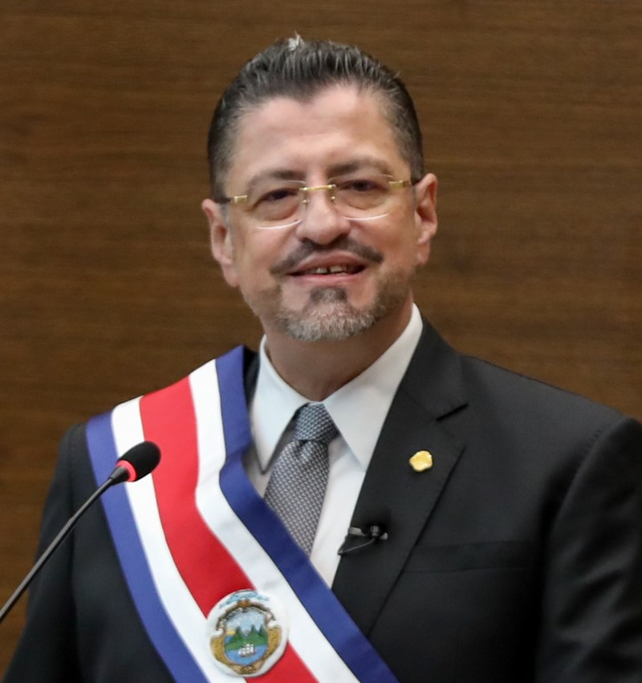
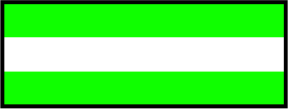

| Foto Candidato | Página del Candidato |
|---|---|
|  | Rodrigo Chaves Robles |
 |
José María Figueres |
 |
Fabricio Alvarado Muñoz |
 |
Eliécer Feinzaig Mintz |
| Bandera | Nombre | Resultado Encuesta 1 | Resultado Encuesta 2 |
|---|---|---|---|
 |
Rodrigo Chaves Robles | 5 % de aprobación | 8.19 % de aprobación |
|  | José María Figueres | 17 % de aprobación | 17.01 % de aprobación |
 |
Fabricio Alvarado Muñoz | 9 % de aprobación | 10.27 % de aprobación |
| Eliécer Feinzaig Mintz | 3.1 % de aprobación | 5.68 % de aprobación |